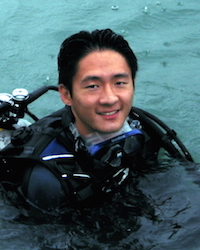

|  | Danwei HUANG
Deputy Head |
Lab: Blk S3 Level 4
Tel: (+65) 6516 2696
Email: huangdanwei(AT)nus.edu.sg
Academic history
PhD, Scripps Institution of Oceanography (2012)
MSc, National University of Singapore (2008)
BSc, National University of Singapore (2006)
Teaching areas
LSM3252: Evolution and Comparative Genomics
LSM4261: Marine Biology
BL5225: Marine Conservation
Research interests
(1) Coral reef ecology
Coral reefs are one of the most diverse ecosystems on Earth, with most species concentrated in the Central Indo-Pacific region. We are interested in the physical, biological and historical processes that have driven this large-scale pattern. Focusing on reef corals, we are exploring the influences of characteristics such as thermal tolerance, symbiosis, coloniality and other life history traits in shaping the distribution of species.
(2) Coral reef evolution
Globally, many coral reef species are facing heightened extinction risk from climate change and local impacts. Extinction probabilities aside, species are not equal. Rather, evolutionary processes render each species unique with a characteristic history that can be quantified for conservation prioritisation. We perform phylogenetic analyses on reef corals using morphological and molecular data to develop a robust classification of species that corresponds with their natural history. These reconstructions allow us to identify endangered lineages, phylogenetic distribution of extinction risks, and geographic regions with the largest potential losses of evolutionary diversity.
(3) Coral reef conservation
Various biodiversity measures related to taxonomy, function and evolution must be integrated and purposed for practical conservation to ensure the long-term functioning of reef ecosystems. We aim to address questions concerning the spatial and temporal variabilities of coral reef biodiversity components within the South China Sea region and in Singapore. Findings from these studies will help us better understand past and present extinction risks face by reef inhabitants, enabling comprehensive management of these risks and accurate projections of the future of coral reefs.